Paylaşım yapan bir ekip değil, dijital büyümenizi yöneten çözüm ortağınız.
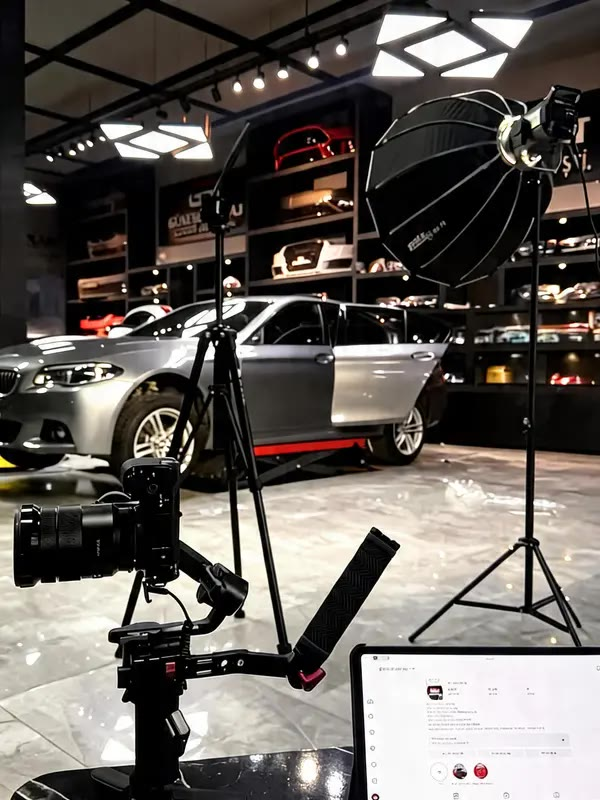
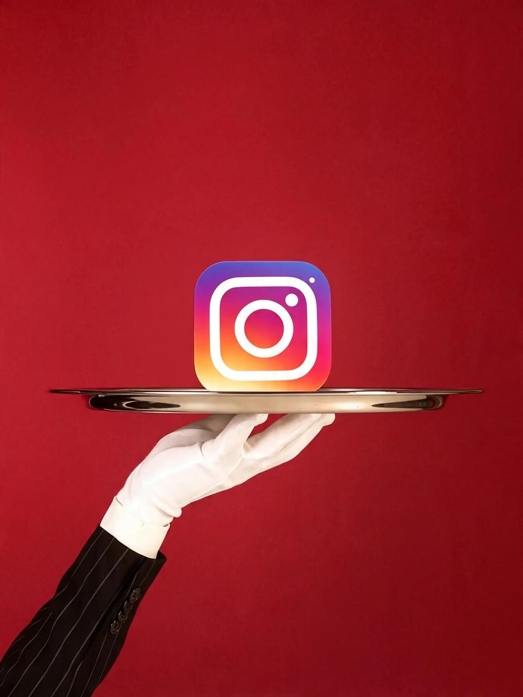
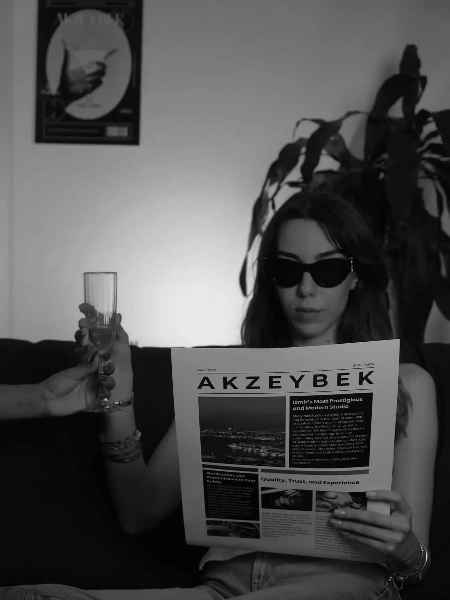
İçerik üretmek, işin yalnızca bir parçası. Biz markanızın dijital büyümesini stratejiden sonuca kadar yönetiyoruz.
Bizimle çalışmayı farklı kılan noktalar, kısaca.
Doğru hedef kitleye, doğru stratejiyle ulaşın.
Meta ve Google reklamlarınızı yalnızca yayınlamıyor, uçtan uca yönetiyoruz.
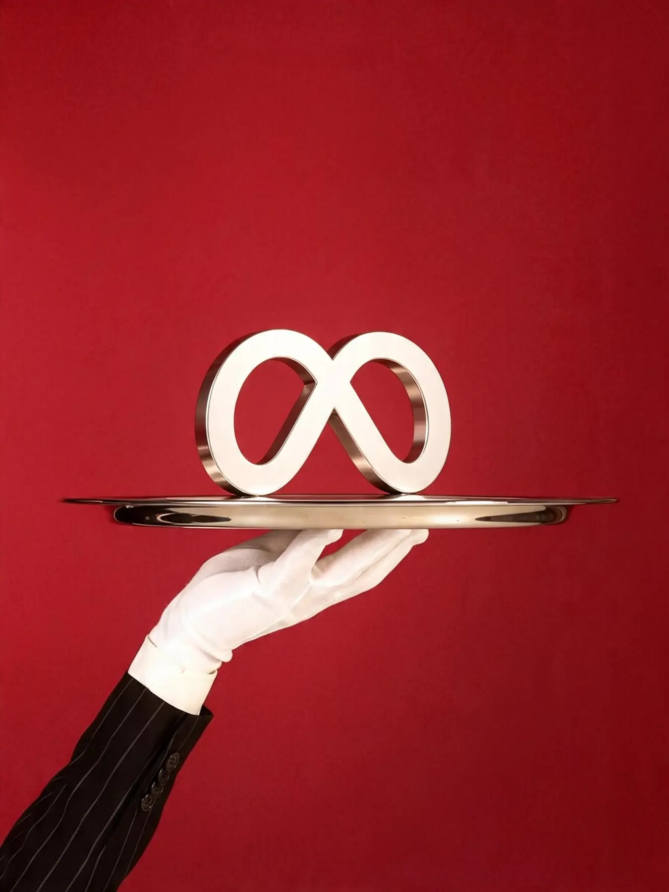
Ne yaptığımızı ve sonuçlarını her zaman bilin.
Her ay sonunda reklam, sosyal medya ve dijital çalışmalarınızın sonuçlarını raporluyoruz.
Hazır paketlere değil, işletmenizin ihtiyaçlarına odaklanıyoruz.
Her işletmenin hedefi, bütçesi ve ihtiyacı farklıdır. Bu yüzden standart paketlerin dışında, size özel bir çalışma modeli kuruyoruz.
Örnek kombinasyonlardır; çalışma modeliniz ihtiyaçlarınıza göre birlikte belirlenir.
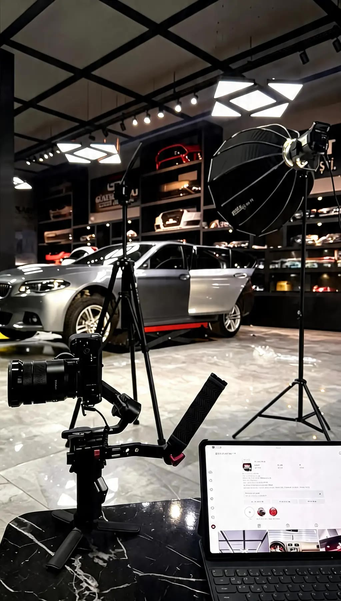
Showroom çekimi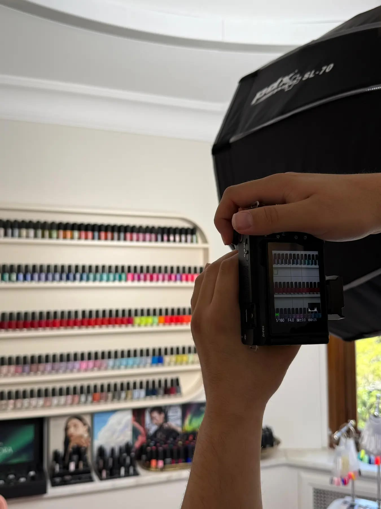
Güzellik merkezi çekimi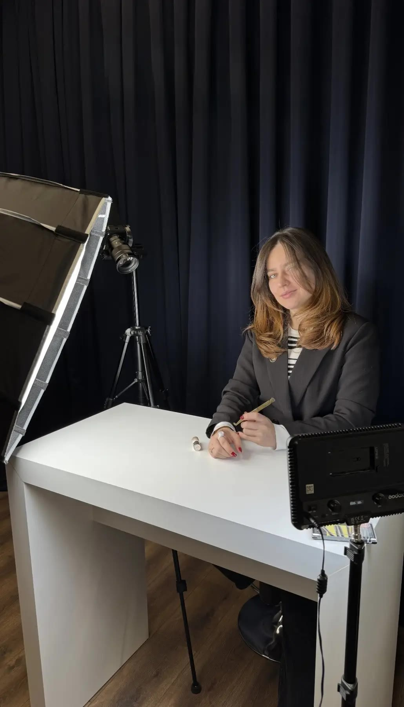
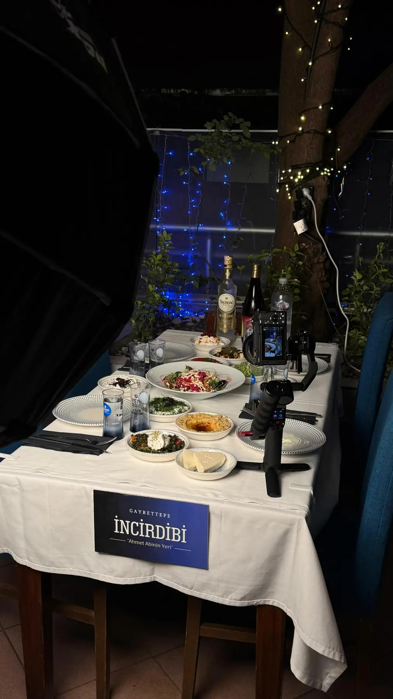
Restoran içerik çekimi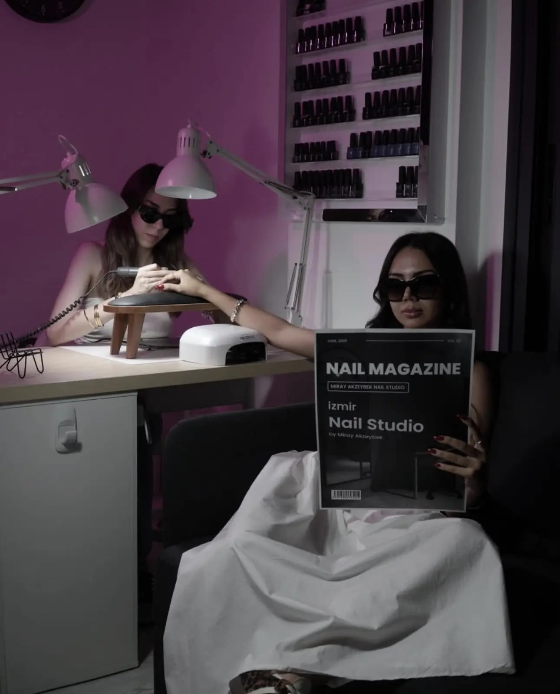
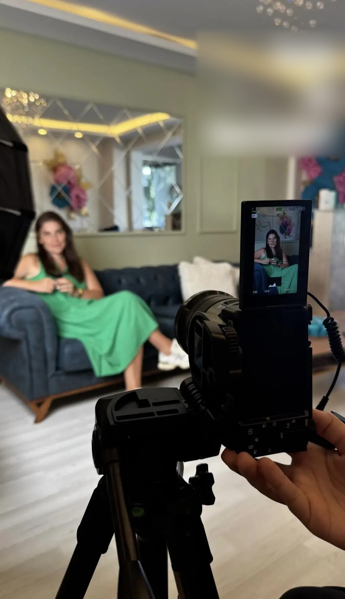
Röportaj çekimi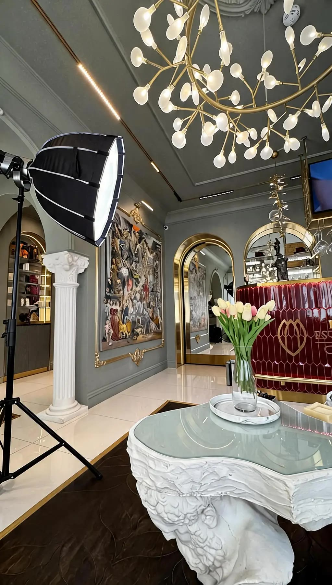
Mekân çekimi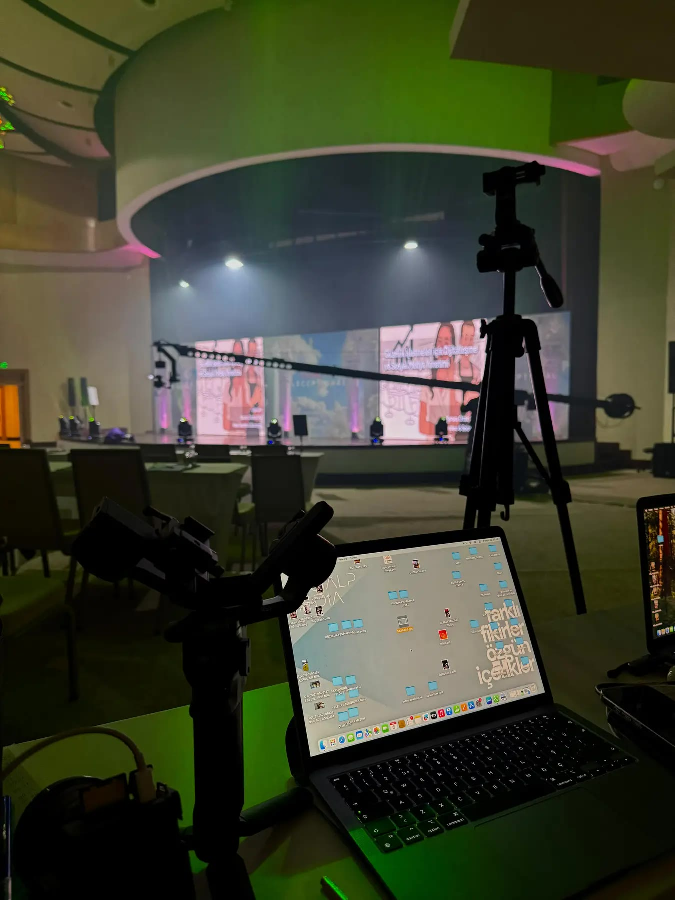
Markanızı profesyonel ekip ve ekipmanlarla yansıtıyoruz.
Çekimden montaja kadar tüm üretim süreci tek ekipte.
İşletmenizi uzun süreli sözleşmelere bağlı bırakmıyoruz. Sizi yanımızda tutan tek şey, işimizin kalitesi.
Sadece içerik üretmiyor, markanıza yol gösteriyoruz.
Süreç boyunca ihtiyaçlarınızı değerlendiriyor, gerek duyduğunuz her noktada danışmanlık sağlıyoruz.
Farklı ihtiyaçlar için farklı ajanslarla çalışmak zorunda kalmayın.
Web tasarımdan reklam yönetimine, tüm dijital süreçlerinizi tek çatı altında yönetiyoruz.
Hedeflerinizi anlatın; markanıza özel yol haritasını birlikte çizelim.